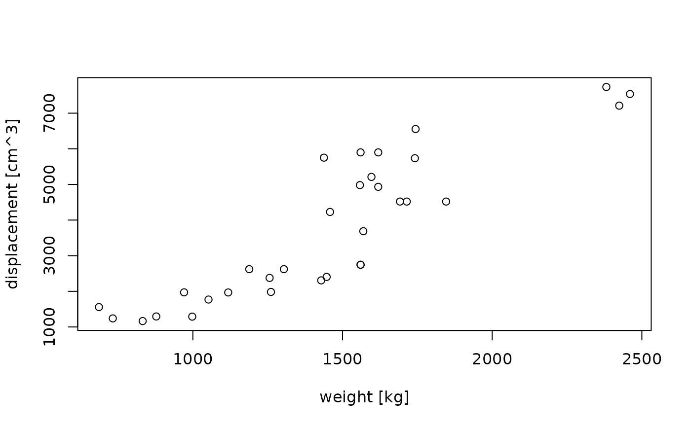
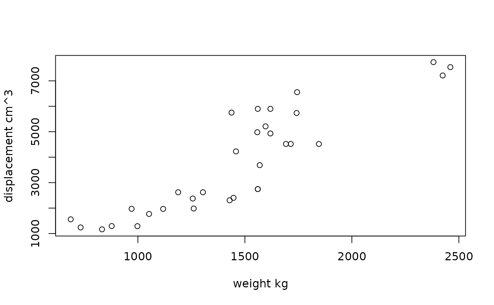
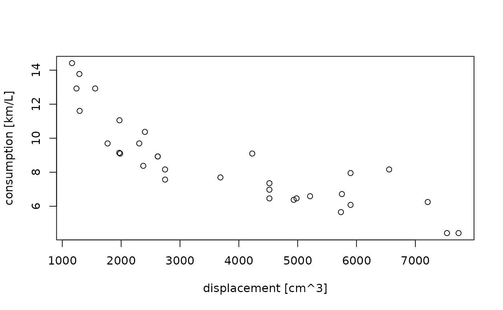
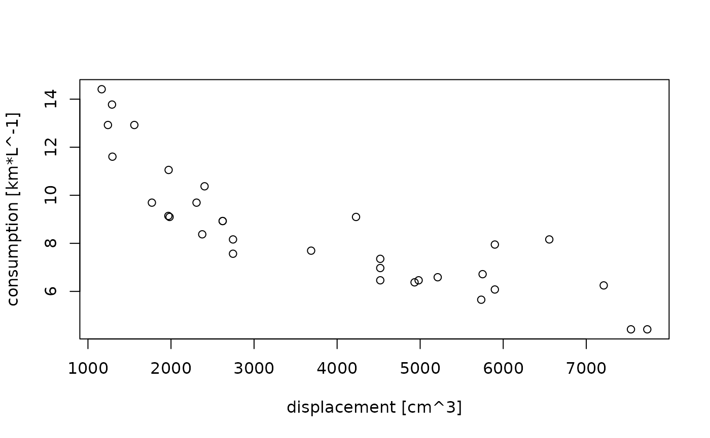
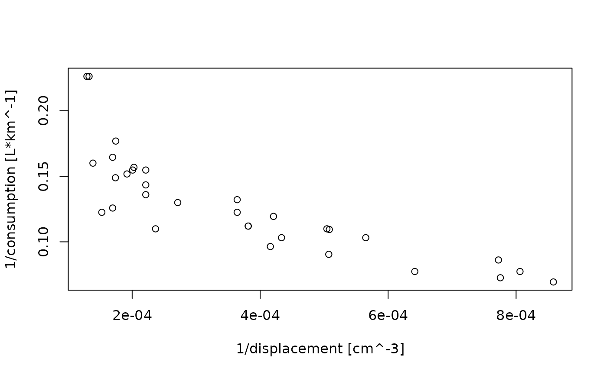

Create axis label with appropriate labels.
Plot method for units objects.
Usage
make_unit_label(lab, u, sep = units_options("sep"),
group = units_options("group"), parse = units_options("parse"))
# S3 method for class 'units'
plot(x, y, xlab = NULL, ylab = NULL, ...)Arguments
- lab
length one character; name of the variable to plot
- u
vector of class
units- sep
length two character vector, defaulting to
c("~","~"), with the white space between unit name and unit symbols, and between subsequent symbols.- group
length two character vector with grouping symbols, e.g.
c("(",")")for parenthesis, orc("","")for no group symbols- parse
logical; indicates whether a parseable expression should be returned (typically needed for super scripts), or a simple character string without special formatting.
- x
object of class units, to plot along the x axis, or, if y is missing, along the y axis
- y
object to plot along the y axis, or missing
- xlab
character; x axis label
- ylab
character; y axis label
- ...
other parameters, passed on to plot.default
Details
units_options can be used to set and change the defaults for
sep, group and doParse.
Examples
displacement = mtcars$disp * as_units("in")^3
units(displacement) = make_units(cm^3)
weight = mtcars$wt * 1000 * make_units(lb)
units(weight) = make_units(kg)
plot(weight, displacement)

units_options(group = c("(", ")") ) # parenthesis instead of square brackets
plot(weight, displacement)
units_options(sep = c("~~~", "~"), group = c("", "")) # no brackets; extra space
plot(weight, displacement)

units_options(sep = c("~", "~~"), group = c("[", "]"))
gallon = as_units("gallon")
consumption = mtcars$mpg * make_units(mi/gallon)
units(consumption) = make_units(km/l)
plot(displacement, consumption) # division in consumption

units_options(negative_power = TRUE) # division becomes ^-1
plot(displacement, consumption)

plot(1/displacement, 1/consumption)
